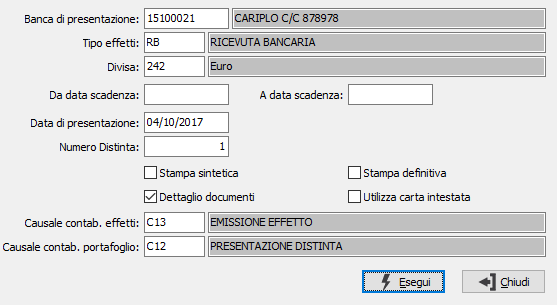

Stampa distinta effetti
Il programma effettua la stampa, di prova o definitiva, della distinta di presentazione effetti all’incasso. Vengono selezionati gli effetti in cui, tramite i programmi di elaborazione automatica o manuale distinta, era stato assegnato il codice della banca per cui si vuole stampare la distinta.
In funzione delle date di scadenza inserite nel presente programma, potrebbero essere inseriti in distinta solo una parte degli effetti precedentemente assegnati.
Entrambe le modalità di stampa (di prova – definitiva) producono il prospetto di distinta di presentazione.
La stampa definitiva determina inoltre la creazione automatico delle scritture contabili di generazione effetti e di presentazione effetti all’incasso (se previsto in configurazione partite). Vengono perciò visualizzate le causali contabili presenti nella Tabella codici fissi.
Ove tali causali non vengano presentate automaticamente a video, l’utente è tenuto ad inserire interattivamente causali idonee.

BANCA DI PRESENTAZIONE: inserire il codice della banca a cui si intende presentare la distinta degli effetti. Tale codice è stato assegnato agli effetti tramite il precedente programma di Elaborazione distinta.
TIPO EFFETTO: Inserire il codice del tipo di effetti da presentare. Valori consentiti: RB = Ricevuta Bancaria; TR = Tratta; CE = Cessione.
DIVISA: indicare il codice della divisa degli effetti da presentare.
DA DATA SCADENZA: indicare la data di scadenza da cui si intende iniziare la selezione degli effetti per la stampa. Confermando a vuoto la stampa inizia dal primo effetto valido per l'esercizio corrente.
A DATA SCADENZA: indicare la data scadenza con cui si intende terminare la selezione degli effetti per la stampa. Confermando a vuoto la stampa termina con l'ultimo effetto valido.
DATA DI PRESENTAZIONE: viene proposta la data di sistema, modificabile. È la data in cui viene emessa la distinta effetti; in fase di stampa definitiva questa data viene memorizzata sull'effetto preso in considerazione per l'elaborazione. Se la stampa definitiva genera le scritture contabili, queste verranno registrate nella data di presentazione.
NUMERO DISTINTA: È il numero progressivo della distinta di presentazione effetti. Viene proposto in automatico il numero dell'ultima distinta memorizzata sui protocolli contabili aumentato di 1; viene poi riaggiornato in fase di stampa definitiva della distinta.
STAMPA SINTETICA: Check box per definire il layout di stampa. Valori consentiti: vuoto = stampa analitica; spunta = stampa sintetica.
DETTAGLIO DOCUMENTI: Check box per definire se in fase di stampa si intende elencare tutte le fatture che compongono l’effetto oppure solo la prima. Valori possibili: vuoto = stampa solo la prima fattura; spunta = stampa tutte le fatture.
STAMPA DEFINITIVA: check box per stabilire il tipo di stampa. Valori ammessi: vuoto = Stampa di prova; spunta = Stampa definitiva.
UTILIZZA CARTA INTESTATA: definisce l'utilizzo di formato diverso per la stampa adatto a carta intestata (casella con segno di spunta).
CAUSALE CONTABILIZZAZIONE EFFETTI: È la causale con cui verrà generato il movimento contabile di presentazione del singolo effetto. Genera una scrittura Effetti attivi a Cliente per ciascun effetto.
CAUSALE CONTABILIZZAZIONE PORTAFOGLIO: È la causale con cui verrà generato il movimento contabile di presentazione della distinta. Genera una scrittura Effetti all’incasso a Effetti attivi per ciascuna data di scadenza effetti.
A conferma, viene eseguita la stampa della distinta. Dopo la stampa, viene visualizzato il seguente messaggio.